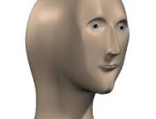
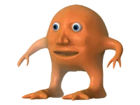
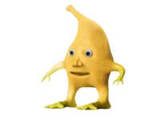
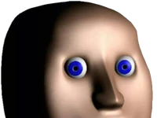

The essence of Meme Man lies in the bizarre, "magically" absurd misspelling—reminiscent of German or "Martian" internet slang—of various professions, emotions, or actions.

This is Meme Man (sometimes referred to as "Stonks Guy" or "Mr. Succ"). He is depicted as a 3D model of a male human head without a body.He is a key figure in the surreal meme scene.



The essence of Meme Man lies in the bizarre, "magically" absurd misspelling—reminiscent of German or "Martian" internet slang—of various professions, emotions, or actions.